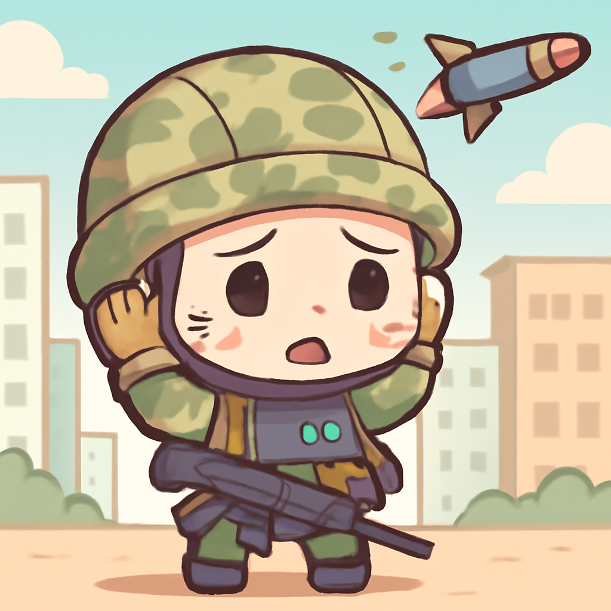
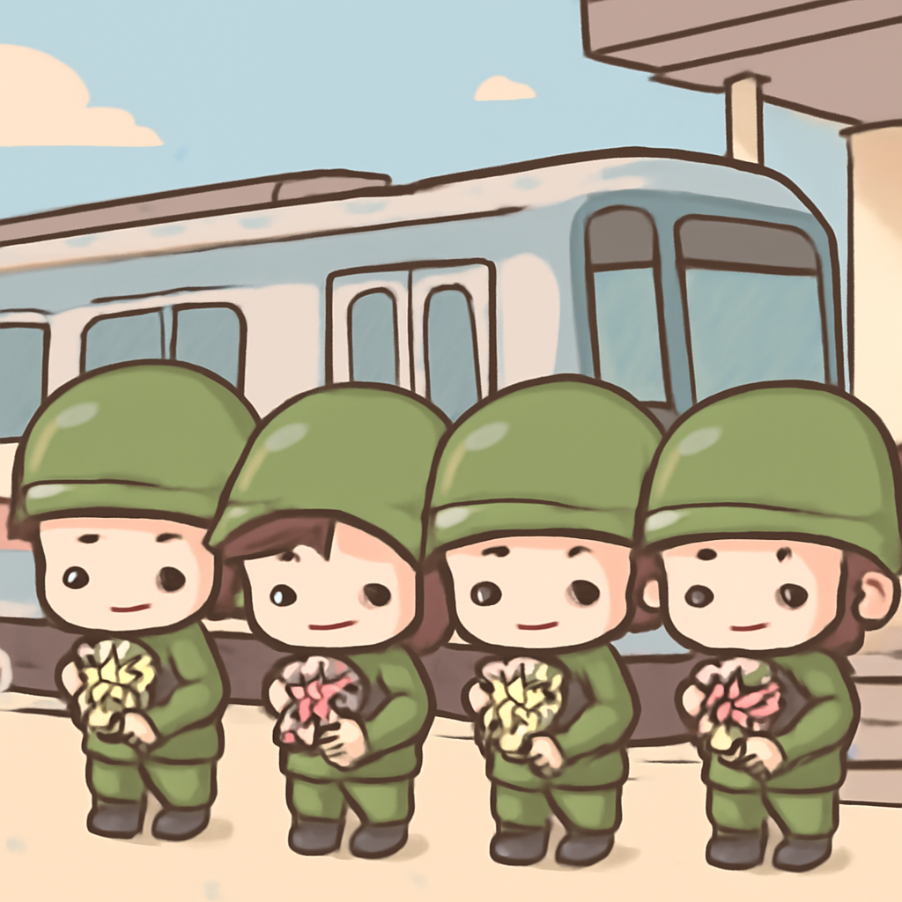
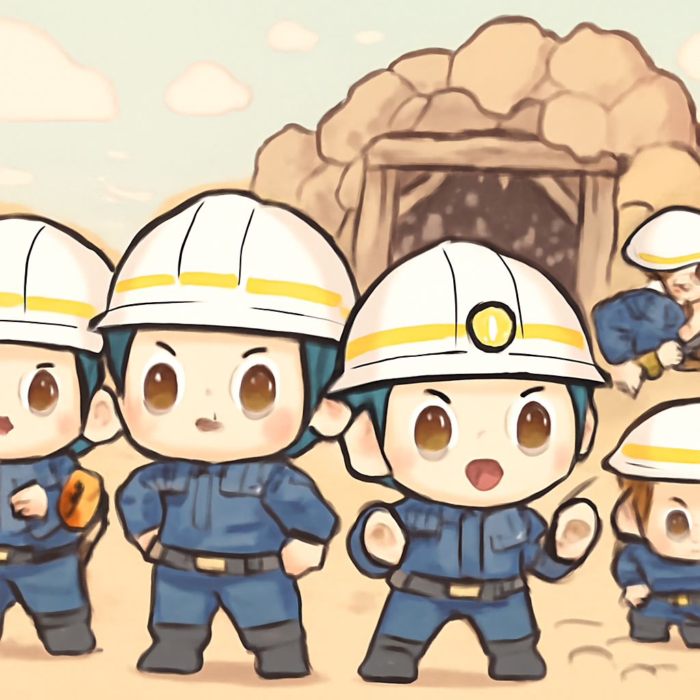
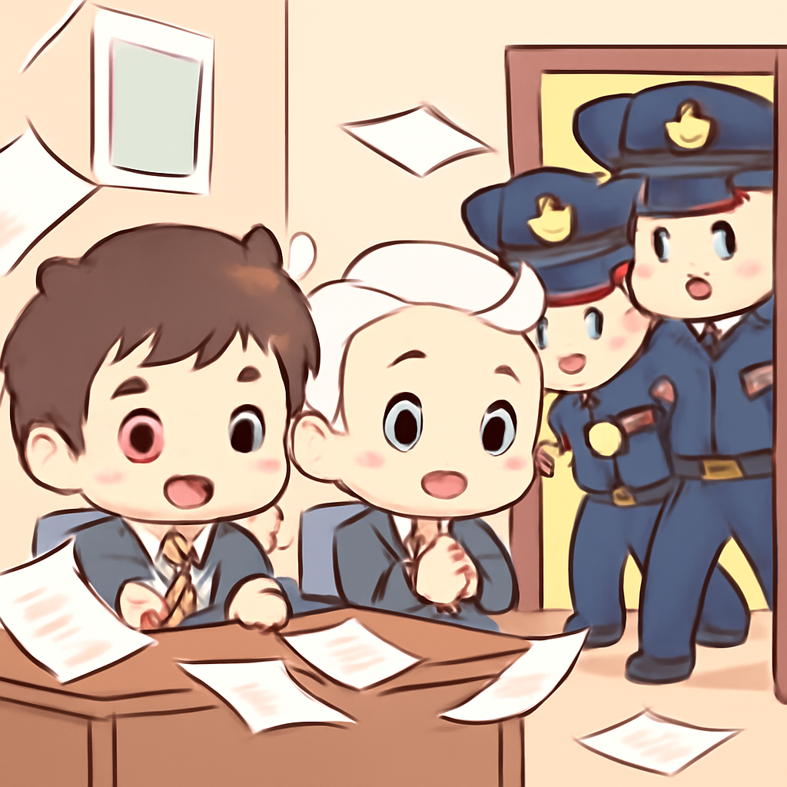

其一 · 烏克蘭基輔 · 俄國導彈攻擊造成傷亡
基輔遭俄國導彈襲擊，造成數人死傷

在烏克蘭首都基輔，俄國發射的Oreshnik導彈造成了四人死亡和數十人受傷，這是自戰爭開始以來第三次使用此型導彈。這場攻擊不僅讓當地居民感到恐懼，也讓國際社會再次關注烏克蘭的局勢。希望下一次的導彈是從太空來的科幻電影，而不是現實中的悲劇。
🔗 原始新聞 ↗
2026-05-25 · 以古觀今，以笑抗愁
基輔遭俄國導彈襲擊，造成數人死傷

在烏克蘭首都基輔，俄國發射的Oreshnik導彈造成了四人死亡和數十人受傷，這是自戰爭開始以來第三次使用此型導彈。這場攻擊不僅讓當地居民感到恐懼，也讓國際社會再次關注烏克蘭的局勢。希望下一次的導彈是從太空來的科幻電影，而不是現實中的悲劇。
🔗 原始新聞 ↗
巴基斯坦一列火車遭襲，造成20人死亡

在巴基斯坦，一列載著軍人返鄉過節的火車在途中遭到武裝分子的襲擊，造成至少20人遇害，這個事件再次引發了對該國安全局勢的擔憂。對於這些軍人來說，返鄉過節的行程變成了悲劇，真是讓人心痛。希望未來能有更多的和平，而不是這種悲劇。
🔗 原始新聞 ↗
中國發生嚴重礦災，造成82人死亡

在中國，柳神雨礦發生了氣體爆炸，造成82人死亡，這是十多年來最嚴重的礦災之一。事故的原因仍在調查中，但這提醒了我們在追求經濟發展的同時，安全問題絕對不能被忽視。希望今後能有更好的安全措施，讓工人們能在安全的環境下工作。
🔗 原始新聞 ↗
土耳其警察突襲反對派辦公室，局勢緊張

土耳其警方近期突襲了反對派的辦公室，這一行動發生在該黨領導人被驅逐之後，顯示出土耳其政治局勢的緊張。這不僅影響了反對派的運作，也讓國內外觀察者對土耳其的民主發展感到擔憂。希望未來能有更多的對話，而不是這種強硬的手段。
🔗 原始新聞 ↗
美伊和平協議有望達成，局勢有變
美國官員表示，美伊之間的和平協議有望達成，雙方已就重開霍爾木茲海峽和處理伊朗高濃縮鈾問題達成原則共識。這對於中東的穩定來說是個好消息，但談判的細節仍需時間確定。希望這能為地區帶來更多的和平，而不是持續的衝突。
🔗 原始新聞 ↗